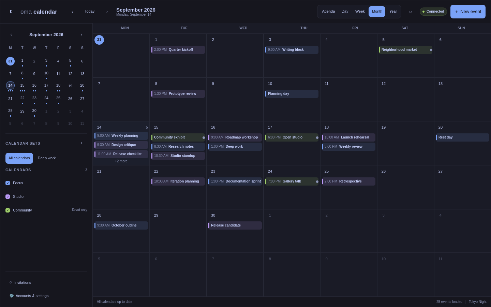

OmaCalendar
A fast, local-first calendar that brings your agenda, event editing, Google Calendar, and CalDAV into a native desktop app and an Omarchy Quickshell widget.
Built for the desktop
OmaCalendar keeps a local calendar cache for responsive offline use. A shared background service powers both the Qt Quick application and its Quickshell widget, while credentials remain in the Linux desktop Secret Service.
1.0.0-alpha is an unsupported evaluation prerelease. Use test calendars and keep independent backups while live-provider and stable current-Omarchy acceptance testing continues. Source code and progress are public on GitHub.
Calendar views that stay out of the way
Move between agenda, day, week, month, and year views; edit events without leaving the calendar; and keep the same cached data available to the independently released Omarchy widget.



Every screenshot is generated from an isolated profile containing only synthetic events—never a maintainer calendar or account.
Beta distribution
The first beta will ship a checksummed, attested native Arch package in its GitHub release for current Omarchy on x86-64. It can be installed directly with pacman -U; no custom package repository is required.